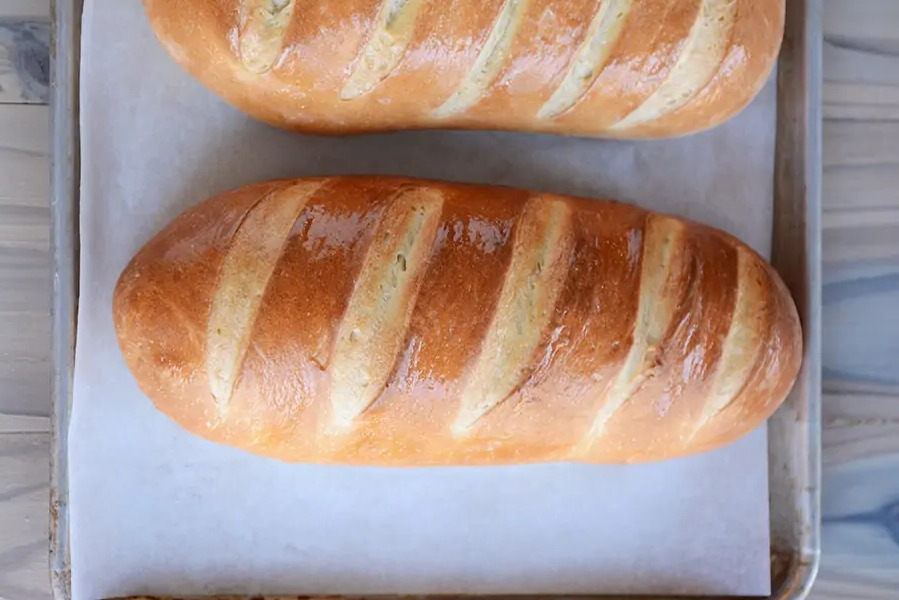
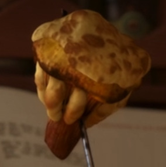
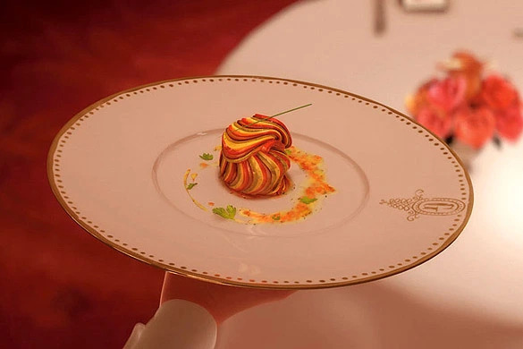
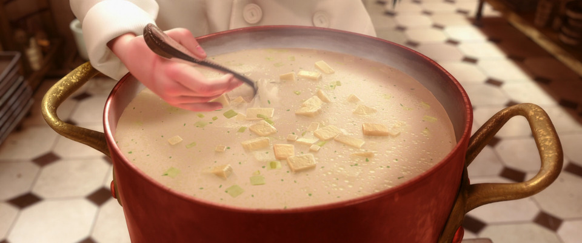

Freshly Baked Bread Selection (vegetarian)
€6
How do you tell how good bread is without tasting it? Not by the smell, not by the look, but by the sound of the crust. Oh, symphony of crackle! Only great bread sounds this way.

Strawberry Cheesecake Sensation (vegetarian)
€12
The creamy, salty-sweet, oaky nuttiness of the cheese combines with the sweet, crisp flavour of strawberries and grapes, with a slight tang on the finish, to conjure a sense of the infinite discoveries to be made by stopping to savour the world around you.

Lightning Mushrooms (vegetarian, gluten-free)
€16
A world first, these chanterelle mushrooms are caked in tomme de chèvre du pays (valley goat’s cheese) and tied together with rosemary and saffron. The mushrooms are then cooked with a unique method that creates a popping, zapping sensation in the mouth. Seasonal. Not a dish to be attempted at home!

Classic Omelette (vegetarian-option, gluten-free)
€10
A homage to the first meal shared between Linguini and The Little Chef, this dish serves as a reminder that sometimes trust is rewarded.

Ratatouille Confit Byaldi (Vegan, gluten-free)
€20
This traditional peasant’s dish is guaranteed to instantly transport you to the nostalgic days of your childhood and rekindle your passion for a good meal. A favourite of critic and patron Anton Ego. One can never get too familiar with vegetables!

Tomato, Leek & Potato Soup (vegetarian, gluten-free)
€16
A fresh twist on an old classic, this soup was first created when Linguini was merely a plongeur at Gusteau’s, and he found himself having to improvise after knocking over a cauldron. Famously reviewed by Solene LeClaire, this is the soup that started it all.

Sweetbreads Special (gluten-free)
€12
A forgotten favourite of Chef Auguste Gusteau, this complicated mélange of veal stomach, seaweed and cuttlefish is a fresh surprise from an old master.